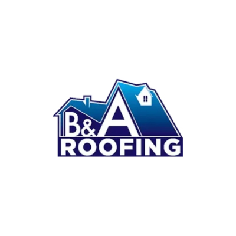
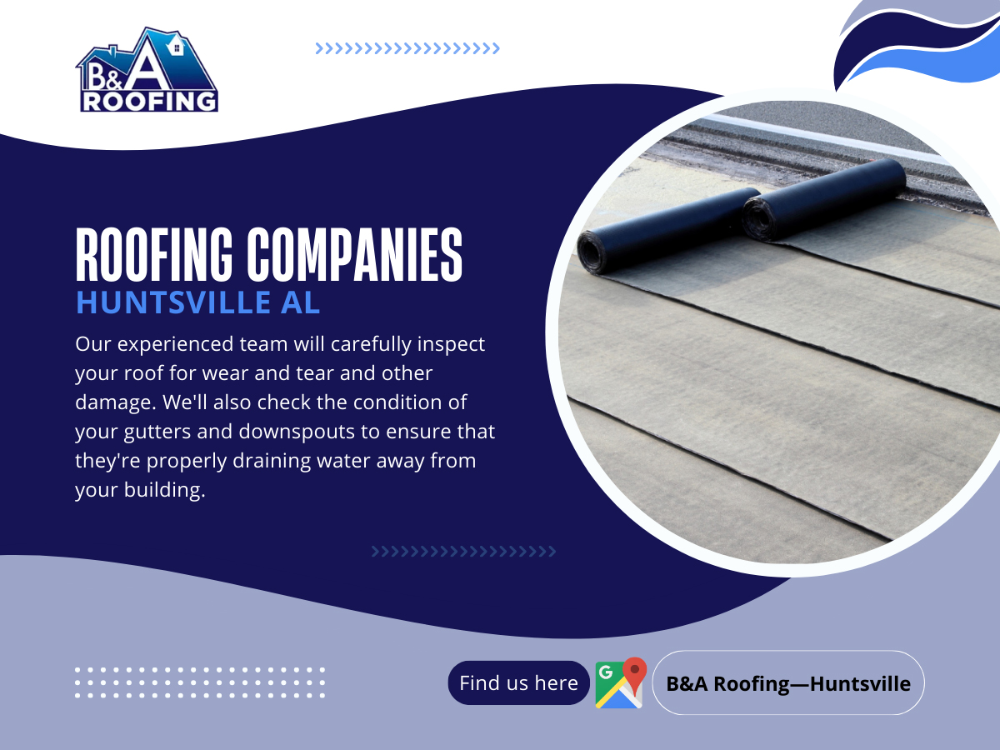
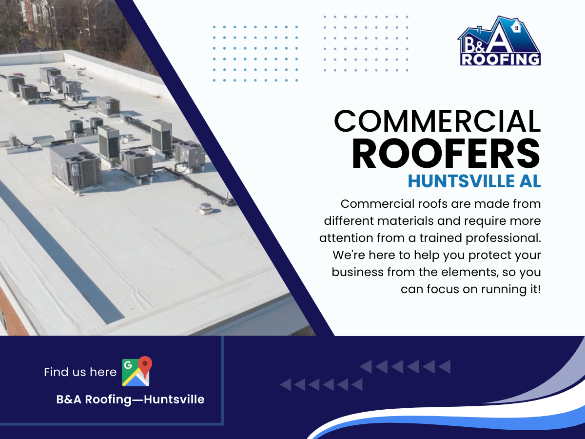
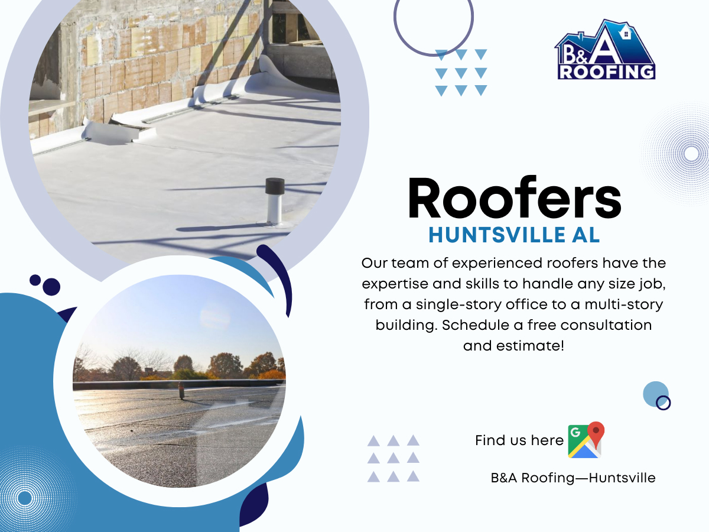
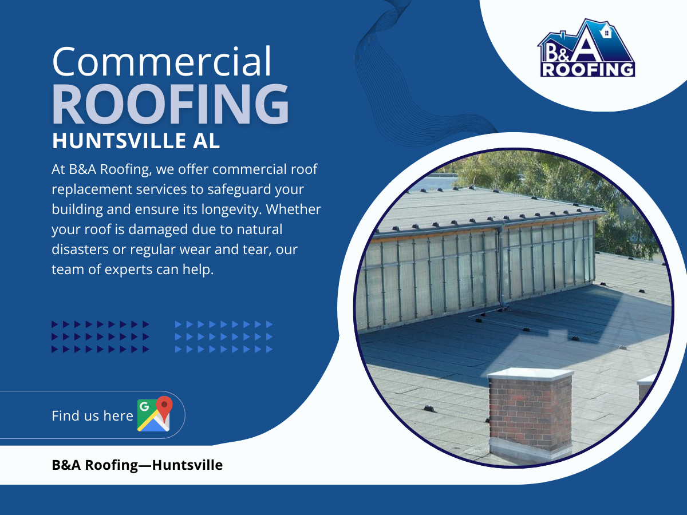

📞 Call NowB&A Roofing provides expert residential and commercial roofing services throughout Huntsville, AL. From roof repairs and replacements to commercial roofing systems, our experienced team delivers quality workmanship, free inspections, and dependable service you can trust.
B&A Roofing also specializes in commercial roofing in Huntsville, AL and provides experienced commercial roofers in Huntsville, AL for businesses throughout North Alabama.

As one of the trusted roofing companies in Huntsville AL, B&A Roofing provides residential roof repairs, roof replacements, inspections, and installations.

Our experienced commercial roofers in Huntsville AL deliver roofing solutions for offices, retail centers, industrial buildings, churches, and more.

If you need dependable roofers in Huntsville AL, our team provides fast and reliable roof repair services.

We provide complete roof replacement services using premium materials and expert craftsmanship.
B&A Roofing is one of the leading commercial roofers in Huntsville, AL, providing reliable roofing solutions for businesses throughout North Alabama. Whether you need commercial roof repair, roof replacement, or a complete roofing system installation, our team delivers quality workmanship and exceptional customer service.
See why homeowners and businesses trust B&A Roofing. Read our verified customer reviews on Google or visit our official website to learn more about our roofing services in Huntsville, AL.
B&A Roofing is a locally owned company with over 25 years of combined experience and industry certifications.
Yes. Our commercial roofers provide repairs, replacements, and new roofing systems.
Yes. We offer free inspections throughout Huntsville and surrounding areas.